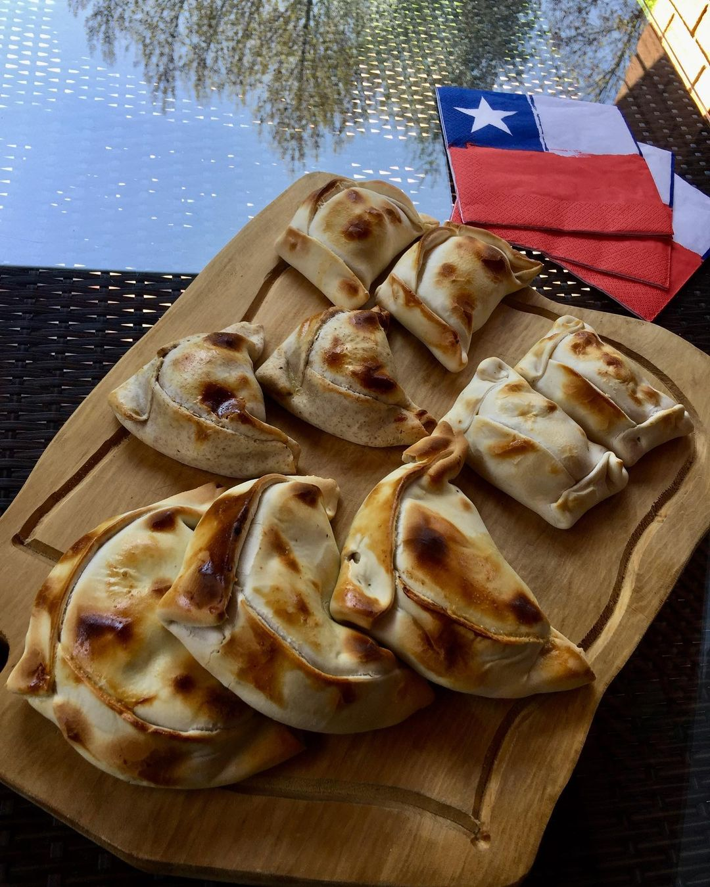

Empanadas Chilenas

Chilean empanadas bring a comforting flavour to the table.
Pino
- 1 kg minced beef
- 4 large onions chopped
- 3 garlic cloves crushed
- 2 TBSP cumin
- 2 TBSP paprika
- 2 g black pepper (1/2 TSP)
- 12 g salt
- 70 g raising
- 2 TBSP flour
Cooking Instructions
- Pino: preferably, make it the evening before. (the house will smell lovely at bedtime) In a large pan add sunflower oil to fry the onions and garlic, until they are soft.
- Add the minced beef, salt and pepper, mix well until combined.
- Add the cumin and paprika, stir well then add the raisins.